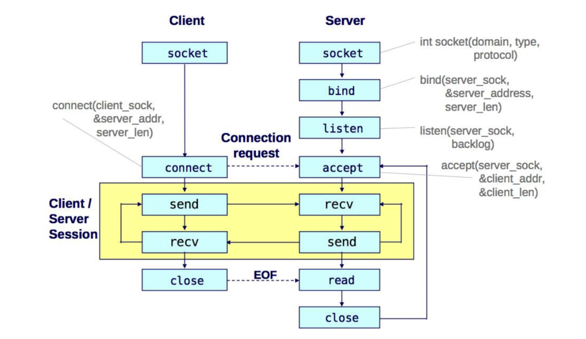
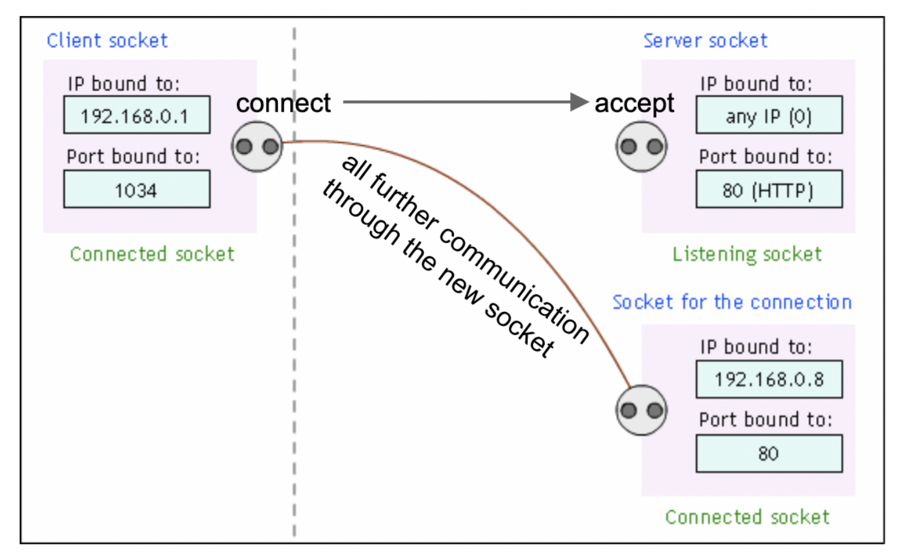

Sockets and Server Testing
Sockets and HTTP
What is a socket?
A socket is a software construct used for many modes of communication between processes. The mode of communication that this recitation will focus on is network communication. In particular, stream sockets represent an endpoint for reliable, bidirectional connections such as TCP connections. This allows for two processes, on separate computers, to communicate over a TCP/IP network connection.
Sockets have: - an IP address, to (typically) identify the computer that the socket endpoint belongs to - a port number, to identify which process running on the computer the socket endpoint belongs to - a protocol, such as TCP (reliable) or UDP (unreliable). Stream sockets use TCP
An IP address and port number are both required in order for a computer to communicate with a specific process on a remote computer.
The client-server model
The two endpoints in a socket connection serve different roles. One end acts as a server: - It tells the operating system that it should receive incoming connections on a port number - It waits for incoming connections - When it receives a connection, it creates a new socket for each client, which will then be used to communicate with that client
The other end is a client: - It "connects" to the server using the server’s IP address and the port number
After a client connects to a server, there is bidirectional communication
between the two processes, often with I/O system calls such as read() and
write(), or their socket-specific variants recv() and send().
Sockets with netcat
A simple way to demonstrate the bidirectional and network-based communcation of
sockets is with netcat. netcat is a bare-bones program to send streams of
binary data over the network.
Imagine we have two computers that can communicate over the internet, with the
IP addresses clac.cs.columbia.edu and clorp.cs.nyu.edu.
Because of the client-server model, connecting two socket endpoints to each
other is not a symmetrical process. One socket needs to act as the server, while
the other needs to act as a client. You tell netcat to act as a server with
the -l flag:
The netcat program on clac.cs.columbia.edu will create a socket and wait for
connections on port 10000. To tell netcat to act as a client, you supply the
IP address of the server and the port number of the socket listening on that
server:
Notice the differences between these two commands. The first command only requires a port number, and doesn't require the IP address of the other computer. The second command requires knowledge of both the IP address (what computer to connect to) and the port number (which process to connect to on that computer). This asymmetry is the client-server model.
After the client connects to the server, the server netcat process creates a
new socket for bidirectional communicaiton. After the two processes connect
there is no functional difference between client and server. What you type on
one end should be visible on the other -- a full duplex stream of data.
Sockets API Summary

socket()
- Called by both the client and the server
- On the server-side, a listening socket is created; a connected socket will be
created later by accept()
bind()
- Usually called only by the server
- Binds the listening socket to a specific port that should be known to the
client
listen()
- Called only by the server
- Sets up the listening socket to accept connections
accept()
- Called only by the server
- By default blocks until a connection request arrives
- Creates and returns a new socket for each client
connect()
- Called only by the client
- Requires an IP address and port number to connect to
- Attempt to establish connection by reaching out to server
send() and recv()
- Called by both the client and server
- Reads and writes to the other side
- Message boundaries may not be preserved
- nearly the same as write() and read(), but with socket-specific options
A TCP client may use these functions as such:
int fd = socket(...);
connect(fd, ... /* server address */);
// Communicate with the server by send()ing from and recv()ing to fd.
close(fd);
And a TCP server:
int serv_fd = socket(...);
bind(serv_fd, ... /* server address */);
listen(serv_fd, ... /* max pending connections */);
// use an infinite loop, to continue accepting new incoming clients
for (;;) {
int clnt_fd = accept(serv_fd, ...);
// Communicate with the client by send()ing from and recv()ing to
// clnt_fd, NOT serv_fd.
close(clnt_fd);
}
Listening socket vs connected socket

To form a bidirectional channel between client and server, three sockets are used:
- The server uses two sockets
- The listening socket, to accept incoming connections from a client
- The client socket, which is created when an incoming connection has been
accept()ed.
- The client uses one socket
- The connect()ing socket, which reaches out to the server. Once the
connection has been made, communication can be done between the server's client
socket and the client's connecting socket.
HTTP 1.0
HTTP 1.0 is a protocol between a client, typically a web browser, and a server, typically a web server hosting files such as HTML. It is an outdated version of the HTTP protocol and simpler than newer versions.
When visiting a website, a URL is specified in the following format:
http://example.com:80/index.html
^^^^ ^^^^^^^^^^^ ^^^^^^^^^^^^^
| | | |
| | | URI = /index.html
| | port number = 80
| domain name = example.com
protocol = HTTP
Based on the information provided by the user in the URL, a web client will establish a socket connection with the IP address of the domain name. After establishing the connection, the two computers exchange text in the form of HTTP requests:
- The client sends an HTTP request for a resource on the server
- The server sends an HTTP response
HTTP request - First line: method, request URI, version - Ex: "GET /index.html HTTP/1.0\r\n" - Followed by 0 or more headers - Ex: "Host: www.google.com\r\n" - Followed by an empty line - "\r\n"
HTTP response - First line: response status - Success: "HTTP/1.0 200 OK\r\n" - Failure: "HTTP/1.0 404 Not Found\r\n" - Followed by 0 or more response headers - Followed by an empty line - "\r\n" - Followed by the content of the response - Ex: image file or HTML file
We can see the contents of real HTTP requests using netcat by pretending to be
either a web client or server. Our client and server won't actually work, since
they simply recieve the incoming request but do nothing to process the request
or reply.
Let's first act as a web server. We tell netcat to open a server connection
with nc -l 10000, and then in a web browser navigate to the URL with the
domain name of this server. We can use the domain name localhost to specify
the local computer rather than connecting to a remote computer over the
internet. In Chrome, we'll navigate to the URL
http://localhost:10000/index.html. netcat outputs this:
$ nc -l 10000
GET /index.html HTTP/1.1 # GET == method; /index.html == request URI; HTTP/1.1 == version
Host: localhost:10000 # header
Connection: keep-alive # more headers...
-removed for brevity-
# blank newline to indicate end of headers/request
To act as a client, we can type our HTTP request manually into netcat rather
than doing it through the web browser. Here, we try to send an HTTP request to
the domain name example.com on port 80 (the default for HTTP web servers)
for the URI /index.html. Note that we specify the -C with netcat so that
newlines are \r\n rather than \n -- a requirement of the HTTP protocol. This
flag may vary depending on netcat version -- check man nc.
$ nc -C example.com 80
GET /index.html HTTP/1.0 # GET == method; /index.html == request URI; HTTP/1.1 == version
# blank line to specify end of request
HTTP/1.0 200 OK # start of HTTP response. HTTP/1.0 == version; 200 OK == response status
Accept-Ranges: bytes # header
Content-Type: text/html # more headers...
-removed for brevity-
# blank newline to indicate end of headers and start of file contents
<!doctype html> # HTML contents
<html>
<head>
<title>Example Domain</title>
-removed for brevity-
Testing your multi-server
Siege
Siege is a command-line tool that allows you to benchmark your webserver using load testing. Given a few parameters, Siege gives you information about the number of successful transactions to your website, percent availability, the latency/throughput of your server, and more.
To install siege, run the following command:
To use siege with your webserver in HW3, run your server and test with the following command:
This will run for an infinite amount of time. When you Ctrl-C out of the command, a list of statistics will be outputted on your terminal.
A better way to test with siege is using its options. The -c and -r options
are particularly useful, as they allow you to specify the number of concurrent
"users" and repetitions per user, respectively. For example, the following
command will create 25 concurrent users that will each attempt to hit the server
50 times, resulting in 1250 hit attempts:
There are many other options, specified in the siege man page. These include
-t, which specifies how long each user should run (as opposed to how many
times), and -f, which specifies a file path that contains a list of URLs to
test.
Additional guidance on testing/benchmarking
When grading, we're going to test your implementation using a mix of manual connections (e.g. using tools like netcat) and stress testers like siege.
You should use netcat to make sure that basic functionality works and that you
can indeed have more than 1 connection to the server at any given time. netcat
is nice because it allows you to establish a connection and then prompts you for
the data to send. You should also use netcat to test that your cleanup logic
is correct, as you can control exactly when connections start/terminate.
Your server should be resilient to any client failure. netcat is a useful tool
to test these kinds of failures, as you can simulate bad requests or
disconnections at various points during the transaction. Your server should be
able to gracefully handle these scenarios -- under no condition should your
server crash because of a client failure.
Once you've tested the basic functionality, use a stress tester to make sure that your server handles concurrent hoards of requests in a reasonable amount of time. Since we're all on VMs running on different host machines, we can't really say "X requests must finish in Y seconds". We're just looking to make sure that your server doesn't take years (e.g. because it is actually serializing requests).
Our grading scripts make heavy use of siege url files. siege will basically make requests using the URLs specified in this file. Use this to make sure your server can concurrently handle all kinds of requests and correctly respond to all of them (2xx, 4xx, 5xx, multi-server never responds with 3xx).
Regarding benchmarking, the assignment prompt occasionally instructs you to compare the performance of the implementation of one part with another. However, since you are testing multi-server in a virtual machine, the performance isn’t guaranteed to be significantly better. As such, don’t worry too much about the benchmarking instructions - it’s not a hard and fast requirement.
Acknowledgements
- Some examples were taken from John Hui's Advanced Programming lecture notes. We recommend reading them on top of these recitation notes.
- Lecture 13 - TCP/IP Networking
- Lecture 14 - HTTP